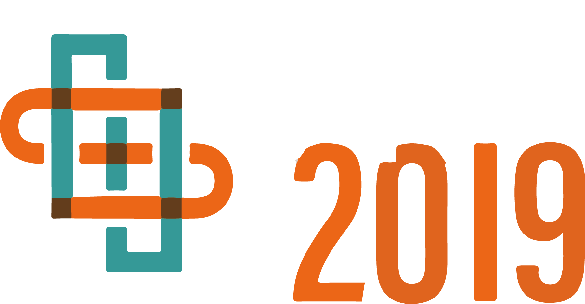

BBeep: A Sonic Collision Avoidance System for Blind Travellers and Nearby Pedestrians
30-sec Preview Video
Main Video [2:35]
Abstract
We present an assistive suitcase system, BBeep, for supporting blind people when walking through crowded environments. BBeep uses pre-emptive sound notifications to help clear a path by alerting both the user and nearby pedestrians about the potential risk of collision. BBeep triggers notifications by tracking pedestrians, predicting their future position in real-time, and provides sound notifications only when it anticipates a future collision. We investigate how different types and timings of sound affect nearby pedestrian behavior. In our experiments, we found that sound emission timing has a significant impact on nearby pedestrian trajectories when compared to different sound types. Based on these findings, we performed a real-world user study at an international airport, where blind participants navigated with the suitcase in crowded areas. We observed that the proposed system significantly reduces the number of imminent collisions.
Publications
Seita Kayukawa, Keita Higuchi, João Guerreiro, Shigeo Morishima, Yoichi Sato, Kris Kitani, and Chieko Asakawa.
2019.
BBeep: A Sonic Collision Avoidance System for Blind Travellers and Nearby Pedestrians.
In Proceedings of the 2019 CHI Conference on Human Factors in Computing Systems (CHI 2019).
粥川青汰, 樋口啓太, João Guerreiro, 森島繁生, 佐藤洋一, Kris Kitani, 浅川智恵子.
BBeep:歩行者との衝突予測に基づく警告音を用いた視覚障害者のための衝突回避支援システム.
インタラクション,
2019.
Authors
Waseda Research Institute for Science and Engineering
University of Tokyo
Carnegie Mellon University
IBM Research
Carnegie Mellon University
Related Project
Media
Carnegie Mellon University (press release).
Collision-Detecting Suitcase, Wayfinding App Help Blind People Navigate Airports.
2019/5/7.
Tech Nation News.
Visually impaired people move safely at the airport with this app and suitcase aid.
2019/5/10.
Cool Blind Tech.
BBeep is a Suitcase That Helps Visually Impaired People Navigate Airport Terminals.
2019/5/21.
engineering.com.
Collision-Detecting Suitcase Makes Airport Navigation Easier for the Visually Impaired.
2019/5/15.
American Academy of Ophthalmology.
Week in review: Suitcase alarm, DNase drop, RingJect redo.
2019/5/10.
Futuro prossimo.
BBeep, il trolley intelligente che accompagna i non vedenti in aeroportot.
2019/5/10.
Medgadged.
Smart Suitcase and App Combo Help Blind People Get Around Pittsburgh International.
2019/5/9.
Airport Technology.
CMU and Pittsburgh Airport launch smart suitcase for blind passengers.
2019/5/9.
Travel+ Leisure.
This Smart Suitcase Was Designed to Help Visually-impaired Travelers Navigate Busy Airports.
2019/5/8.
Pittsburgh Business Times.
CMU unveils suitcase, app that can help blind people navigate airports.
2019/5/8.
New Kerala.
Collision-detecting suitcase, way-finding app will help visually impaired travellers to navigate airports.
2019/5/8.
ScienceDaily.
Collision-detecting suitcase, wayfinding app help blind people navigate airports.
2019/5/7.
CryptoeFedd.Ru.
Приложение и «умный» чемодан помогут слабовидящим сориентироваться в аэропортах.
2019/5/7.
Science Codex.
Collision-detecting suitcase, wayfinding app help blind people navigate airports.
2019/5/7.